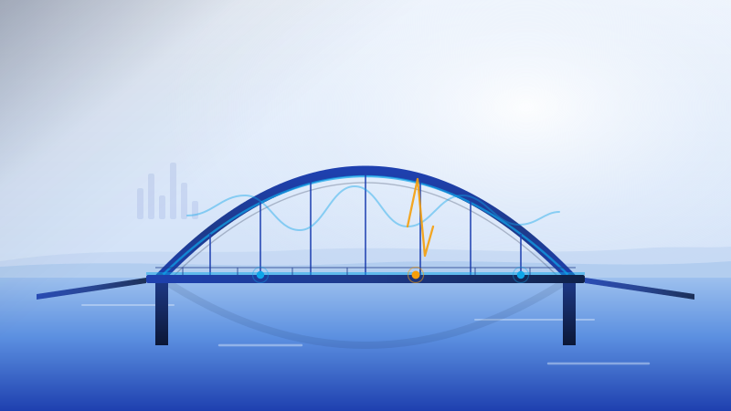

Structural HealthKorea Code Fair 2026 · Flagship
SENTRY — Low-Cost Bridge Anomaly Detection
Continuous vibration screening for small bridges, robust to temperature & humidity.
A low-cost MEMS-accelerometer system that flags abnormal bridge vibration. It learns how weather shifts a healthy bridge's natural frequency and compensates for it, then an autoencoder detects anomalies in the residual — with explainable, band-wise alarms that prioritize inspection. Validated on the public Z24 bridge benchmark and a custom bridge model.